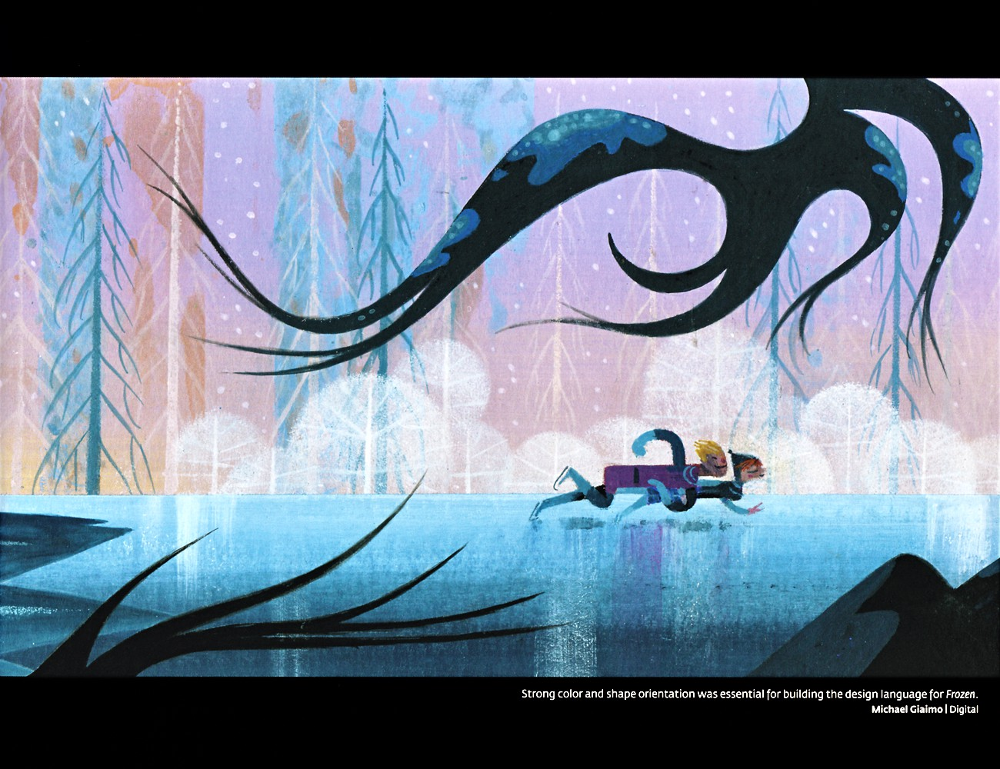

克里斯托夫没有魔法，但他的「生存技能」就是他的超能力。在冰天雪地的阿伦黛尔郊外，攀冰、驯鹿驾驭、野外生存——这些技能让他能在最恶劣的环境中生存，也让他成为安娜寻姐路上最可靠的搭档。
克里斯托夫是专业的采冰人，攀冰是他的核心技能。他能在结冰的山壁上自由攀爬，用采冰斧和绳索在最危险的冰面上行走。F1中，他带着安娜穿越北山的暴风雪，在结冰的山坡上稳稳前行，展现了高超的攀冰技术。采冰不仅是他的谋生手段，也是他与自然对话的方式——他了解冰的性格，知道哪里的冰结实、哪里的冰危险，这种「与冰共生」的智慧是他独有的。
克里斯托夫与驯鹿斯文形影不离，驯鹿驾驭是他的另一项核心技能。他能驾驭驯鹿拉雪橇在雪地中高速前行，也能在最恶劣的暴风雪中指挥驯鹿找到正确的方向。F1中，他驾着斯文拉的雪橇带着安娜穿越北山，展现了高超的驯鹿驾驭技术。更重要的是，他与斯文的关系不是「主人与坐骑」，而是「家人」——他常替斯文用低沉「驯鹿音」配音，把斯文当作内心独白的对象。这种「与动物沟通」的能力，源于他孤独中长大的经历——他习惯了与动物为伴，因为动物不会背叛他。
克里斯托夫在山野中长大，野外生存是他的本能。他能在暴风雪中找到避难所，能在冰天雪地中生火取暖，能在最恶劣的环境中找到食物和水源。F1中，他带着安娜在北山的暴风雪中生存，用自己的野外生存技能保护安娜。这种「生存能力」不仅是技能，也是一种「生活态度」——他习惯了依靠自己，不依赖任何人，在最艰难的环境中也能找到生存的方式。遇到安娜后，他的「生存能力」有了新的意义——他不仅要自己生存，还要保护他爱的人。